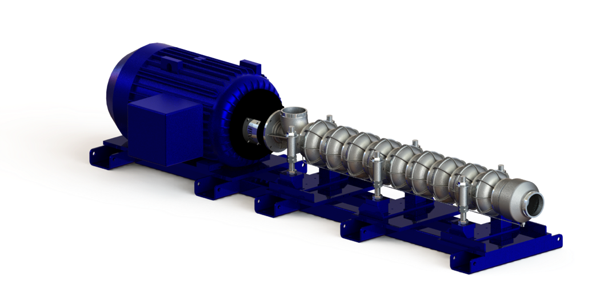

認識產品 ↗APPLICATIONS
海水淡化
從海水 RO 的設備需求出發，認識承信代理的 FEDCO 高壓泵、能量回收設備與低壓泵，以及 Memstar UF 前處理膜組件。依水量、壓力與原水條件，洽詢適合的產品。
高壓泵｜MSD／MSS
海水 RO 需要多少進水量與壓力？
因應不同 RO 進水流量與揚程需求，選用 FEDCO MSD 或 MSS 高壓泵。兩系列的流量範圍有所重疊，實際型號依水質、接液材質及操作條件確認。

從您的現場條件開始討論
請提供需求流量、進出口壓力與原水條件，洽詢 MSD／MSS 系列選型。
能量回收｜HPB／HP-HEMI
如何利用 RO 濃鹽水的壓力能？
FEDCO HPB 與 HP-HEMI 回收濃鹽水壓力能並提供增壓。依進水與濃鹽水條件、增壓位置及控制需求，評估適合的設備配置。


從您的現場條件開始討論
請提供進水及濃鹽水的流量、壓力與既有流程，洽詢能量回收設備。
低壓泵｜SLP
前處理供水、反洗或產水輸送，需要哪些泵浦配套？
FEDCO SLP 用於低壓供水與輸送，支援前處理、反洗及產水輸送等流程。依流體條件、流量與揚程確認選型。

從您的現場條件開始討論
請提供輸送用途、流體條件、流量與揚程，洽詢 SLP 選型。
UF 前處理｜Memstar
海水 RO 前端需要顆粒截留？
Memstar 指定 UF 膜型可用於海水 RO 前處理。依原水水質與前段流程，確認膜型及配置。

從您的現場條件開始討論
請提供原水分析、處理水量及前段流程，洽詢適用的 UF 膜型。